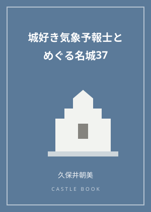

奈良・ならまちの神さまに注目――元興寺で秋季特別展、11月15日まで

城と神社にまつわる新しい動きをお伝えするニュース記事です。出典は産経新聞（2026年10月26日）です。奈良市・元興寺の法輪館では、秋季特別展「ならまちの神さま－元興寺の鎮守と町の神々－」が開かれています。神像や古文書など約70件を展示し、都市に息づいてきた信仰文化を紹介する特別展です。会期は11月15日まで、開館時間は午前9時～午後5時で、観覧料は元興寺入山料（大人800円など）に含まれます。
町ごとに祀られてきた氏神たち
ならまちには、各町の氏神である天神社や御霊（ごりょう）神社、崇道（すどう）天皇社といった大小の神社があります。これらの神社は、元興寺の鎮守として、また御霊信仰などでも知られてきました。町ごとに神を祀る営みが、ならまちの暮らしのなかに長く息づいてきたことがうかがえます。
神像が語る町の信仰のかたち
ならまち東部の町々の氏神である天神社については、平安時代の男神坐像や大将軍神坐像などが公開されます。ならまち中心部から南西部にかけての氏神である御霊神社については、江戸時代に行われた正遷宮の記録なども展示されます。神像と記録の両方から、町の信仰のかたちをたどる展示です。
町家の軒先の「身代わり申」と庚申信仰
現在のならまちの町家の軒先に見られる「身代わり申」で知られる庚申（こうしん）信仰も紹介されます。最初に町中に庚申像（青面金剛（しょうめんこんごう）像）が祭られたのは、浄土宗寺院の霊巖院（れいがんいん）だったといい、江戸時代の青面金剛立像が展示されます。このほか、徳融寺の大黒天立像（室町時代）も公開され、伝統的な台所の神様として信仰されていることを知ってもらう展示となっています。元興寺文化財研究所の服部光真・主幹研究員は「神様の歴史をたどると奈良の都市の歴史が分かり、当時の人々の生活がうかがえる」と話しています。
検定の学習ポイント
神社検定の学習と結びつくテーマです。「氏神」は、ある地域に住む人々が共同で祀る、その土地の守り神を指し、祀る人々は氏子と呼ばれます。「鎮守」は、寺院や地域などを守護するために祀られる神や社を指します。「御霊信仰」は、非業の死を遂げた人などの霊を祀り、災いを鎮めようとする信仰として知られます。「庚申信仰」は、庚申の日に眠らずに過ごす庚申待などで知られる民間信仰で、青面金剛がその本尊として祀られることが多くあります。「正遷宮」は、社殿の造営・修復などに際して、ご神体を新しい社殿へ正式に遷す儀式を指します。いずれも、特別展で扱われる神々を理解する手がかりになります。
秋季特別展の会期は11月15日までで、残りの会期は長くありません。訪れる際は、開館時間（午前9時～午後5時）と入山料をあらかじめ確認してから出かけてください。
神楽すずから一言：町ごとに氏神さまがいて、軒先には身代わり申――ならまちは、歩くほどに神さまとの距離の近さを感じられる町なのですね。特別展で神像や記録を見てから町を歩くと、景色の見え方が変わりそうです。
城と神社のニュースや検定の情報は、公式SNSでもお知らせしています。InstagramとThreadsの @tabi.kentei をフォローして、最新情報をチェックしてください。
このテーマの柱ページ：城と神社のイベント予定表｜これからの行事と特別公開
この記事のおすすめ本

表紙イメージ（実際の表紙とは異なります）
PR ビジュアルガイド
行った気になる！すごい名城 日本の城50
著者：香川元太郎・小和田哲男
日本各地から50の名城を、大迫力の写真と精密イラストで解説。次の城めぐりの行き先選びにも、自宅で眺めて楽しむ画報としても使えます。
Amazonで見るKindle版あり／価格はAmazonでご確認ください／リンク先：Amazon.co.jp

表紙イメージ（実際の表紙とは異なります）
PR 読み物
城好き気象予報士とめぐる名城37 天気が変えた戦国・近世の城
著者：久保井朝美
気象予報士の視点で37の名城をめぐる一冊。天気や気候が築城や戦にどう影響したかという切り口が新鮮で、城を見る目が変わります。
Amazonで見る価格はAmazonでご確認ください／リンク先：Amazon.co.jp

表紙イメージ（実際の表紙とは異なります）
PR 専門書
土の城指南
著者：西股総生
石垣の城だけでなく、土塁と堀で守る中世の「土の城」の歩き方を指南。縄張図の読み方や城跡の見方が身につき、山城歩きがぐっと深くなります。
Amazonで見るKindle版あり／価格はAmazonでご確認ください／リンク先：Amazon.co.jp
当サイトは、Amazon.co.jpを宣伝しリンクすることによってサイトが紹介料を獲得できる手段を提供することを目的に設定されたアフィリエイトプログラムである、Amazonアソシエイト・プログラムの参加者です。価格・在庫はリンク先でご確認ください。